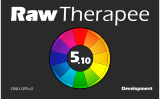

RawFocus
An Unofficial RawTherapee News Page
Part of the RawTherapist
project: your up-to-date
resource hub for everything
that’s RawTherapee!
RawTherapee
RawPedia
GitHub
PIXLS.US
Please note that the following information is intended for general reference only; this project neither affiliates with nor endorses any of the following sources or their content.

© RawTherapee (GNU GPLv3)
Progress with JPEG XL!
Mart Betz - Apr 16, 2024
© RawTherapee (GNU GPLv3)
While we’ve all been enjoying the great new features of 5.10, the RawTherapee project devs have been hard at work as always. Earlier today, xlota shared some very exciting news about JPEG XL support. If you'd like to check on the progress, downloads are available on GitHub! 😃
First Official Linux Packages!
Mart Betz - Feb 19, 2024
© RawTherapee (GNU GPLv3)
Ubuntu & Flatpack Lead the Way!
Mart Betz - Feb 17, 2024
© RawTherapee (GNU GPLv3)
Ubuntu users rejoyce: an unofficial PPA (.deb) is now available to play with, along with the official Flatpack. 🎉 Head on over to UbuntuHandbook if you need some help installing them.
RawTherapee 5.10 is Here!
Mart Betz - Feb 16, 2024
© RawTherapee (GNU GPLv3)
What’s been happening?
The 5.10 stable release is now available for download from the official
RawTherapee website. 🎉
Any changes since Feb 10?
Nope; everything went as smooth as silk —
download and enjoy!
RawTherapee 5.10 is Almost Here!
Mart Betz - Feb 10, 2024
© RawTherapee (GNU GPLv3)
What’s been happening?
Following on from 5.9, work has continued at pace; so much so that 5.10 is just around the corner —
in fact, a full and final release candidate has just been made available! 🎉
What do you mean by ‘release candidate’
A ‘release candidate,’ also known as a ‘pre-release,’ is a fully functional build that’s intended as a final commitment; it's purpose is to ‘test things out in the wild,’ so to speak (just to make sure we’re all happy 😉). If all goes well, the build will be considered as ‘stable’ and released as the latest version.
Great! Where can I find it?
Here are the links for the relative OS builds (as always, you can find the original
source code on GitHub):
Download, test, and have fun — but, most importantly of all, tell us what you think!
What’s new?
Here are some of the highlights (you can find a full list in the
release notes over at GitHub):
- there is now an option to add multiple custom external editors within the Editor tab)
- the Favorites tab can now be configured in Preferences, and the option to display Favorite tools in their original location has also been added
- metadata is now handled by Exiv2, and CR3 metadata is now supported
- when saving images as TIFF, there’s now an additional option to use the BigTIFF format
- the Tone Equalizer in Local Adjustments is now also available in the Exposure tab, and they have a new Pivot adjuster to shift the range of affected tones
- the Lensfun database directory can now be changed in Preferences
- there is now an option to sort images by name, date, rank, colour label, or EXIF from within the File Browser tab
- the Colour Appearance & Lighting tool in the Advanced tab has received various upgrades and improvements
- the L*a*b* Adjustments tool in the Exposure tab and the Local Adjustments tool in the Local tab have received various improvements to the Avoid Colour Shift option
- a new Inpaint Opposed option has been added to Highlight Reconstruction in the Exposure tab
- the White Balance tool in the Colour tab has received various improvements
- the Denoise section of the Blur/Grain & Denoise tool in Local Adjustments of the Local tab has received various improvements to the interface
- raw files from OM Digital Solutions cameras are now supported
- the behavior of the Dynamic Range Compression tool in the Exposure tab and in the Local Adjustments in the Local tab has been improved
- a plethora of additional and improved support has been added for various cameras, raw formats, and colour profiles
What’s next?
The official realease of RawTherapee 5.10, of course; then it’s onward and upward —
there’s plenty more to come; watch this space for continuous updates!